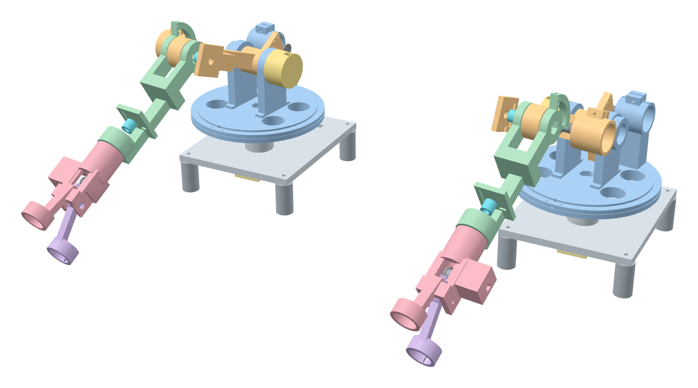
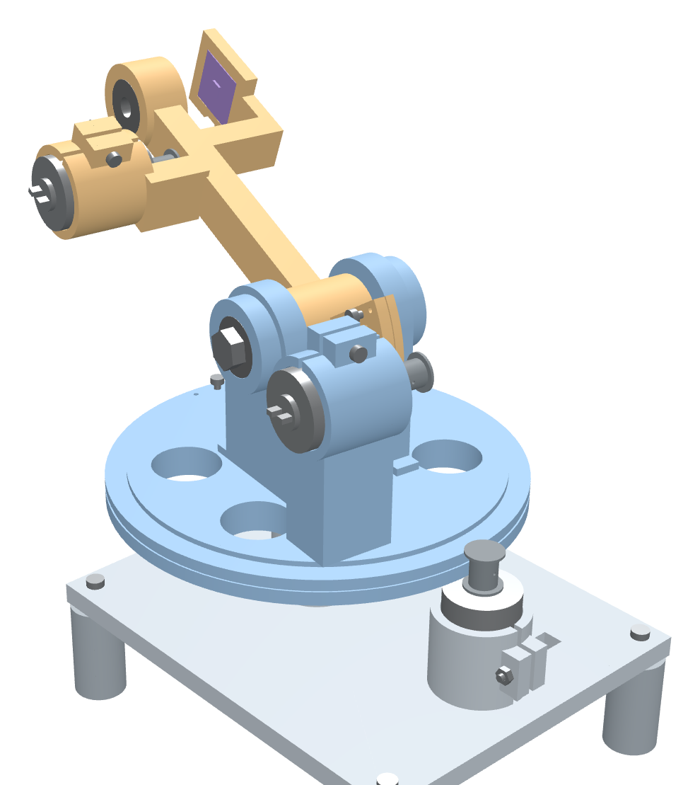
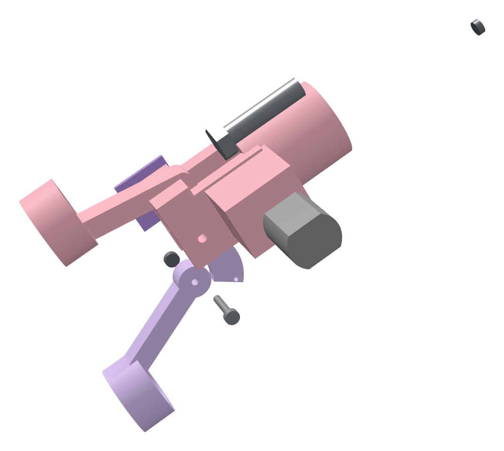

Asclepius.
A 3D-printed surgical robot console you can feel. Move the hand controllers, the virtual instruments follow, and they push back when they touch something.
Two hands. Four motors each. One simulator.
Each controller copies the shape of a surgical console's hand master: yaw, shoulder, elbow, a free-rolling wrist and a pinch grip, every joint measured and four of them driven.

Force you can feel.
Every driven joint is a capstan: braided line wrapped on a small motor drum pulls a large printed sector. There are no gear teeth, so there is almost no backlash, and a contact in the simulator comes through as a clean, firm push.

A grip that grips back.
A small 130 motor hidden in the handle drives the pinch lever through its own capstan. Close the jaws on a virtual block and the lever stops where the block is.

Every joint, measured.
Five AS5600 sensors per hand read a magnet on the end of each axle without touching it, at 4,096 steps per turn. That covers yaw, shoulder, elbow, wrist roll and grip, ten joints across both hands.

The console, at a glance.
Three foot pedals
Clutch, camera and next task. Hold the clutch to re-center your hands without moving the instruments.
A real e-stop
One latching button cuts motor power on both hands. The electronics stay on, so nothing has to reboot.
400 Hz feel
The board closes the force loop 400 times a second, fast enough that a contact feels solid, not springy.
VR next
A laptop screen is all you need today. A Meta Quest 3 view from the robot's camera is the next step.
From your hand to the sim and back.
You move the controllers.
The UNO Q reads all ten encoders through two I2C multiplexers and packs the angles into a binary packet.
The instruments follow.
Packets stream over USB at 200 Hz. A Python bridge relays them to Godot over UDP, where the virtual arms copy your hands.
The sim pushes back.
When an instrument touches something, Godot sends contact forces back at 100 Hz and the motors pull against your hand.
Practice the real drills.
The view comes from the robot's camera, looking down on a table of objects. Pick up a block and you feel it in the grip.
Peg transfer and blocks
Grab, lift and place objects with two instruments, the first drills surgical trainees learn.
Contact you can feel
Every grasp and collision becomes a force on the matching joint of the controller.
Built in Godot 4
Prototyped in Python first, then moved to Godot so the same scene can run on a Quest 3 later.
Explore the details.
One tray runs both hands.
A single printed tray between the controllers holds every board, so the wire runs to each hand stay short.
- Arduino UNO Q
- PCA9685 PWM driver
- 4 × DRV8833 motor drivers
- 2 × TCA9548A I2C mux
Safe to hand to a stranger.
Motor power runs through a latching e-stop and two 8 V converters, one per hand, so a stall on one side can't starve the other.
- 12 V 5 A adapter
- Latching e-stop
- 2 × LM2596 at 8.00 V
- Logic on USB power
Parts you can buy.
Everything that isn't printed comes off the shelf, for about $155 in parts, not counting filament.
- 40 printed parts
- 6 × RS-385, 2 × 130 motors
- 10 × AS5600
- 16 × 608 bearings
Tech specs.
Figures are for the v0.1 controller design.
Mechanics
- Driven joints
- 4 per hand: yaw, shoulder, elbow, grip
- Passive joint
- Wrist roll
- Drive type
- Capstan, braided line
- Ratios
- 14.7 · 8.5 · 6 · 4.4 : 1
- Links
- 130 mm upper arm, 136 mm forearm
- Axles and bearings
- M8, 8 × 608 per hand
Sensing
- Encoders
- 10 × AS5600, 5 per hand
- Resolution
- 12-bit, 4,096 steps per turn
- Magnets
- 6 × 2.5 mm diametric
- Bus
- I2C via 2 × TCA9548A (0x70, 0x71)
Actuation
- Arm motors
- 6 × RS-385
- Grip motors
- 2 × 130
- Drivers
- 4 × DRV8833, PCA9685 (0x40)
- Motor supply
- 8 V per hand
Electronics and software
- Controller
- Arduino UNO Q (Nano 33 BLE backup)
- Haptic loop
- 400 Hz
- Board → PC
- 200 Hz binary packets over USB serial (CP2102)
- PC → board
- 100 Hz contact events
- Bridge
- Python, UDP on localhost 9001 / 9002
- Simulator
- Godot 4.x
- Display
- Laptop screen · Quest 3 planned
Power and safety
- Supply
- 12 V 5 A adapter
- Regulation
- 2 × LM2596 buck at 8.00 V
- Emergency stop
- Latching, normally closed, cuts motor power
- Software kill
- One pin sleeps all four motor drivers
Build
- Printed parts
- 40 (20 per hand)
- Parts cost
- About $155, filament not included
- Team
- 2 people
- Build window
- 24 hours
Built by two.
Name TBD
Role and what they built TBD
Name TBD
Role and what they built TBD
Questions.
Is this a real surgical robot?
No. It is a trainer. The hand controllers copy the layout of a surgical console's hand masters and drive virtual instruments in a simulator. Nothing physical is ever cut or held.
How does it push back?
When an instrument touches something in the simulator, Godot sends a contact force to the board. The board turns it into motor commands, and each motor pulls its joint through a capstan cable against your hand.
What happens if something goes wrong?
A latching e-stop cuts power to every motor at once. The firmware can also put all four motor drivers to sleep on a single pin. The boards stay powered either way.
Does it work in VR?
Not yet. The demo runs on a laptop screen. The simulator is in Godot so it can be exported to a Meta Quest 3 next.
Can I build one?
That's the idea. Everything is 3D printed or off the shelf, for about $155 in parts. The print files and wiring are in the repository TBD.
Why the name Asclepius?
Asclepius is the Greek god of medicine. His staff with a single serpent is still the symbol of medicine, and it is the logo here.
Scrub in.
See the demo, read the write-up, or build your own.